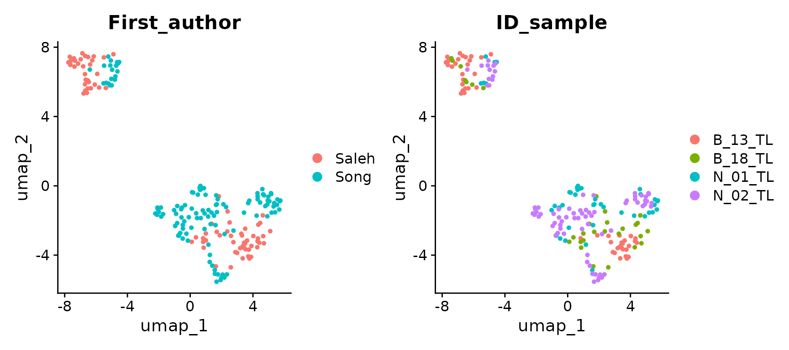
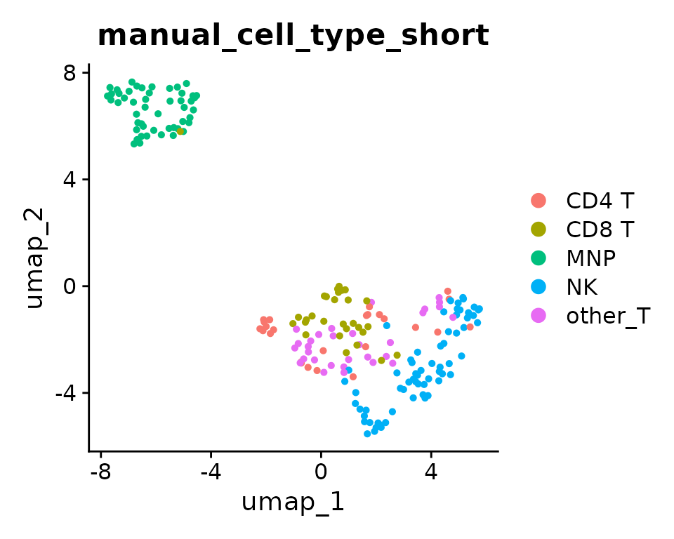
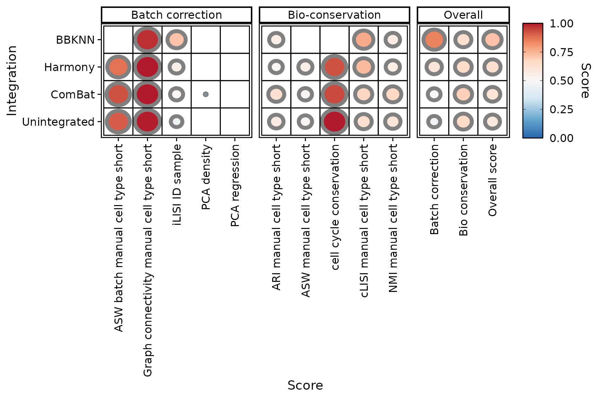

Introduction
SeuratIntegrate is an R package that aims to extend the pool of single-cell RNA sequencing (scRNA-seq) integration methods available in Seurat. Moreover, SeuratIntegrate provides a set of tools to evaluate the performance of the integrations produced.
Integrations
SeuratIntegrate provides access to R and Python methods to correct batch effect:
| Method | Type | Implementation | Underlying algorithm | Reference |
|---|---|---|---|---|
| ComBat | sva (Bioconductor) | Empirical Bayes adjustment | Johnson et al., 2007 | |
| Harmony | harmony (CRAN) | Iterative embedding correction | Korsunsky et al., 2019 | |
| MNN | batchelor (Bioconductor) | Mutual Nearest Neighbors | Haghverdi et al., 2018 | |
| BBKNN | bbknn (GitHub) | Batch-balanced nearest neighbors | Polański et al., 2020 | |
| scVI | scvi-tools (GitHub) | Variational autoencoder | Lopez et al., 2018 | |
| scANVI | scvi-tools (GitHub) | Semi-supervised variational autoencoder | Xu et al., 2021 | |
| Scanorama | scanorama (GitHub) | Manifold alignment | Hie et al., 2019 | |
| trVAE | scArches (GitHub) | Conditional variational autoencoder | Lotfollahi et al., 2020 |
SeuratIntegrate provides a new interface to integrate the layers of
an object: DoIntegrate(). Moreover, SeuratIntegrate is
compatible with CCA and RPCA (included in Seurat) and
FastMNN (from SeuratWrappers)
Scoring
SeuratIntegrate incorporates 11 scoring metrics: 6 quantify the
degree of batch mixing  (batch
correction), while 5 assess the preservation of biological
differences
(batch
correction), while 5 assess the preservation of biological
differences  (bio-conservation) based
on ground truth cell type labels.
(bio-conservation) based
on ground truth cell type labels.
Below is a table summarising each score’s input and type:
| Score name | Require a cell type variable | Require a clustering variable | Input | Score type |
|---|---|---|---|---|
| Cell cycle regression |  |
 |
||
| PCA regression | |
 |
||
| PCA density | |
|
||
| ASW batch |  |
|
|
|
| ASW | |
|
|
|
| ARI | |
 |
|
|
| NMI | |
|
|
|
| cLISI | |
or

|
|
|
| iLISI | |
or
|
|
|
| kBET | |
or
|
|
|
| Graph connectivity |
(per.component = TRUE) |
|
|
Most scores are computed on an embedding  (
(Seurat::DimReduc object) or a graph  (
(Seurat::Neighbor or
Seurat::Graph object). The exceptions are ARI and NMI,
which compare two categorical variables thus don’t need anything else
than a cell-type and a cluster assignment variables.d anything else than
a cell-type and a cluster assignment variables.
Most scores are based on a cell type label variable. This consists in an estimate of each cell’s type obtained by analysing each batch separately or by using an automatic cell annotation algorithm. This estimate of cell types must be of sufficient quality to be considered suitable as ground truth.
Setup
We will use the small dataset of 200 immune liver cells and around 6,500 genes included in SeuratIntegrate.
data("liver_small")
dim(liver_small) # genes x cells## [1] 6534 200It comprises 4 donors from 2 studies. Among the donors, 2 are healthy and 2 are suffering from a hepatocellular carcinoma (HCC).
Importantly, the Seurat object’s metadata also embeds cell type annotation variables.
liver_small[[]][,c(13, 15:17)]Note that albeit not compulsory, a high quality cell-type annotation is very important to evaluate the performance of integrations because many scoring metrics use them as ground truth. Moreover, it helps in verifying whether technical effects (usually called batch effects) overweight true biological differences.
Here, we use the last one and save it:
cell.var <- "manual_cell_type_short"We are going to test 3 integration methods that output different types of objects. We will use ComBat (corrected counts), BBKNN (corrected knn graph) and Harmony (corrected dimension reduction). BBKNN is a Python method, so we need to have a conda environment to be able to use it. Right now, we don’t have such an environment:
getCache()
Hopefully, SeuratIntegrate facilitates the task with
UpdateEnvCache():
UpdateEnvCache("bbknn")
Note: Similarly, you can call UpdateEnvCache()
with all other Python methods (“scvi”, “scanorama”, “trVAE”) to set up
their corresponding conda environments.
If the process is successful, the cache of conda environments should have been updated:
getCache()
We also want to make sure we have a conda environment with a umap-learn version compatible with Seurat:
reticulate::conda_create('umap_0.5.4', packages = 'umap=0.5.4')Preprocessing with Seurat
To ensure that SeuratIntegrate works well, it is indispensable to split the Seurat object. This process distributes cells into single-batch layers such that each batch is normalized independently. We account for potential technical variability between samples by designating “ID_sample” as the batch variable.
batch.var <- "ID_sample" # save for later
liver_small <- split(liver_small, f = liver_small$ID_sample)
liver_small <- SCTransform(liver_small)
liver_small <- RunPCA(liver_small)
liver_small <- FindNeighbors(liver_small, dims = 1:20, k.param = 15L)
liver_small <- RunUMAP(liver_small, dims = 1:20, n.neighbors = 15)
DimPlot(liver_small, group.by = cell.var)
Integration with SeuratIntegrate
liver_small <-
DoIntegrate(object = liver_small,
# integrations
CombatIntegration(),
bbknnIntegration(orig = "pca", ndims.use = 20),
SeuratIntegrate::HarmonyIntegration(orig = "pca", dims = 1:20),
# additional parameters
use.hvg = TRUE,
use.future = c(FALSE, TRUE, FALSE)
)## Integration 1 in 3: integrating using 'CombatIntegration'
## Integration 2 in 3: integrating using 'bbknnIntegration'
## Modularity Optimizer version 1.3.0 by Ludo Waltman and Nees Jan van Eck
##
## Number of nodes: 200
## Number of edges: 1784
##
## Running Louvain algorithm...
## Maximum modularity in 10 random starts: 0.6251
## Number of communities: 5
## Elapsed time: 0 seconds
## Integration 3 in 3: integrating using 'SeuratIntegrate::HarmonyIntegration'If we take a look at our Seurat object, we can note that it has been enriched with many objects:
## An object of class Seurat
## 22602 features across 200 samples within 4 assays
## Active assay: SCT (6534 features, 3000 variable features)
## 3 layers present: counts, data, scale.data
## 3 other assays present: RNA, combat.reconstructed, bbknn.ridge
## 4 dimensional reductions calculated: pca, umap, pca.bbknn, harmony
##
## #####
##
## [1] "SCT_nn"
## [2] "SCT_snn"
## [3] "bbknn_scale.data_connectivities"
## [4] "bbknn_scale.data_distances"
## [5] "bbknn_ridge.residuals_connectivities"
## [6] "bbknn_ridge.residuals_distances"Important outputs are:
- New assay combat.reconstructed
- New reduction harmony
- New graphs bbknn_ridge.residuals_[…]
Post-processing
The type of output is important to consider, because scoring metrics are not compatible with all output types. The simplest strategy is to process each output separately in order to obtain at least a PCA out of it, or even a knn graph (indispensable to compute clusters). Note that several scores cannot be computed on knn graphs, hence knn graph outputs (e.g. BBKNN) can only be evaluated by a reduced set of metrics.
Below is a summary for each output type (bracketed steps are not always necessary):
- corrected counts: [
ScaleData()] ->RunPCA()-> [FindNeighbors()->FindOptimalClusters()] - Dimension reduction: [
RunPCA()] -> [FindNeighbors()->FindOptimalClusters()] - knn graph: [
FindOptimalClusters()]
Here, we will use SymmetrizeKnn() between
FindNeighbors() and FindOptimalClusters()
because return.neighbor = TRUE. This is useful to keep the
distances between cells in the KNN graph. Although not
compulsory, this is used to stay in line with BBKNN’s output. To prevent
the community detection algorithm to output a high fraction of
singletons, we “symmetrize” the matrix which makes the graph
“undirected”.
# corrected counts outputs
DefaultAssay(liver_small) <- "combat.reconstructed"
VariableFeatures(liver_small) <- VariableFeatures(liver_small[["SCT"]])
liver_small <- ScaleData(liver_small)
liver_small <- RunPCA(liver_small, npcs = 50L, reduction.name = "pca.combat")
liver_small <- FindNeighbors(liver_small, reduction = "pca.combat", dims = 1:20,
return.neighbor = TRUE, graph.name = "knn.combat")
liver_small <- SymmetrizeKnn(liver_small, graph.name = "knn.combat")
liver_small <- FindOptimalClusters(liver_small, graph.name = "knn.combat_symmetric",
cluster.name = "combat_{cell.var}_{metric}",
cell.var = cell.var,
optimisation.metric = c("nmi", "ari")) # default, compute both
DefaultAssay(liver_small) <- "SCT"
# dimension reduction outputs
liver_small <- FindNeighbors(liver_small, reduction = "pca", dims = 1:20, k.param = 20L,
return.neighbor = TRUE, graph.name = "knn.unintegrated")
liver_small <- SymmetrizeKnn(liver_small, graph.name = "knn.unintegrated")
liver_small <- FindOptimalClusters(liver_small, graph.name = "knn.unintegrated_symmetric",
cluster.name = "unintegrated_{cell.var}_{metric}",
cell.var = cell.var)
liver_small <- FindNeighbors(liver_small, reduction = "harmony", dims = 1:20,
return.neighbor = TRUE, graph.name = "knn.harmony")
liver_small <- SymmetrizeKnn(liver_small, graph.name = "knn.harmony")
liver_small <- FindOptimalClusters(liver_small, graph.name = "knn.harmony_symmetric", cell.var = cell.var,
cluster.name = "harmony_{cell.var}_{metric}")
# graph outputs
liver_small <- SymmetrizeKnn(liver_small, graph.name = "bbknn_ridge.residuals_distances")
liver_small <- FindOptimalClusters(liver_small, graph.name = "bbknn_ridge.residuals_distances_symmetric",
cell.var = cell.var, cluster.name = "bbknn_{cell.var}_{metric}")Scoring
Now that we have post-processed each integration’s output, we can compute multiple scores to estimate the accuracy of the integrations.
Scores not requiring a cell type variable
Those scores are run on a dimension reduction (such as a PCA) and are not compatible with graph outputs. They are cell-type free score thus do not require a cell-type label variable.
liver_small <- AddScoreRegressPC(liver_small, integration = "unintegrated",
batch.var = batch.var, reduction = "pca")
liver_small <- AddScoreRegressPC(liver_small, integration = "combat",
batch.var = batch.var, reduction = "pca.combat")
liver_small <- AddScoreRegressPC(liver_small, integration = "harmony",
batch.var = batch.var, reduction = "harmony")
liver_small <- AddScoreDensityPC(liver_small, integration = "unintegrated",
batch.var = batch.var, reduction = "pca")
liver_small <- AddScoreDensityPC(liver_small, integration = "combat",
batch.var = batch.var, reduction = "pca.combat")
liver_small <- AddScoreRegressPC(liver_small, integration = "harmony",
batch.var = batch.var, reduction = "harmony")
liver_small <- CellCycleScoringPerBatch(liver_small, batch.var = batch.var,
s.features = cc.genes$s.genes,
g2m.features = cc.genes$g2m.genes)
liver_small <- AddScoreRegressPC.CellCycle(liver_small, integration = "unintegrated",
batch.var = batch.var, what = "pca",
compute.cc = FALSE, dims.use = 1:20)
liver_small <- AddScoreRegressPC.CellCycle(liver_small, integration = "combat",
batch.var = batch.var, what = "pca.combat",
compute.cc = FALSE, dims.use = 1:20)
liver_small <- AddScoreRegressPC.CellCycle(liver_small, integration = "harmony",
batch.var = batch.var, what = "harmony",
compute.cc = FALSE, dims.use = 1:20)Scores based on silhouette width
Those scores return an average silhouette width (ASW), either per
cell type label or per batch. They are run on a dimension reduction
(such as a PCA) and are not compatible with graph outputs. They are
based on a cell-type label variable. However,
ScoreASWBatch() can be run in a cell-type label independent
manner with per.cell.var = FALSE.
liver_small <- AddScoreASW(liver_small, integration = "unintegrated",
cell.var = cell.var, what = "pca")
liver_small <- AddScoreASW(liver_small, integration = "combat",
cell.var = cell.var, what = "pca.combat")
liver_small <- AddScoreASW(liver_small, integration = "harmony",
cell.var = cell.var, what = "harmony")
liver_small <- AddScoreASWBatch(liver_small, integration = "unintegrated",
batch.var = batch.var, cell.var = cell.var,
what = "pca")
liver_small <- AddScoreASWBatch(liver_small, integration = "combat",
batch.var = batch.var, cell.var = cell.var,
what = "pca.combat")
liver_small <- AddScoreASWBatch(liver_small, integration = "harmony",
batch.var = batch.var, cell.var = cell.var,
what = "harmony")Scores working on a graph
Those scores are graph outputs. They require a cell-type label variable.
liver_small <- AddScoreConnectivity(liver_small, integration = "unintegrated",
graph.name = "knn.unintegrated_symmetric",
cell.var = cell.var)
liver_small <- AddScoreConnectivity(liver_small, integration = "combat",
graph.name = "knn.combat_symmetric",
cell.var = cell.var)
liver_small <- AddScoreConnectivity(liver_small, integration = "harmony",
graph.name = "knn.harmony_symmetric",
cell.var = cell.var)
liver_small <- AddScoreConnectivity(liver_small, integration = "bbknn",
graph.name = "bbknn_ridge.residuals_distances_symmetric",
cell.var = cell.var)
liver_small <- AddScoreLISI(liver_small, integration = "unintegrated",
batch.var = batch.var, cell.var = cell.var,
reduction = "pca")
liver_small <- AddScoreLISI(liver_small, integration = "combat",
batch.var = batch.var, cell.var = cell.var,
reduction = "pca.combat")
liver_small <- AddScoreLISI(liver_small, integration = "harmony",
batch.var = batch.var, cell.var = cell.var,
reduction = "harmony")
liver_small <- AddScoreLISI(liver_small, integration = "bbknn",
batch.var = batch.var, cell.var = cell.var,
reduction = NULL,
graph.name = "bbknn_ridge.residuals_distances_symmetric")Scores comparing two categorical variables
Those scores compare two categorical variables. Thus, they don’t need
anything else than a cell-type and a cluster assignment variables
(computed during Post-processing with
FindOptimalClusters()).
liver_small <- AddScoreARI(liver_small, integration = "unintegrated",
cell.var = cell.var,
clust.var = paste("unintegrated", cell.var, "ari", sep = "_"))
liver_small <- AddScoreARI(liver_small, integration = "combat",
cell.var = cell.var,
clust.var = paste("combat", cell.var, "ari", sep = "_"))
liver_small <- AddScoreARI(liver_small, integration = "harmony",
cell.var = cell.var,
clust.var = paste("harmony", cell.var, "ari", sep = "_"))
liver_small <- AddScoreARI(liver_small, integration = "bbknn",
cell.var = cell.var,
clust.var = paste("bbknn", cell.var, "ari", sep = "_"))
liver_small <- AddScoreNMI(liver_small, integration = "unintegrated",
cell.var = cell.var,
clust.var = paste("unintegrated", cell.var, "nmi", sep = "_"))
liver_small <- AddScoreNMI(liver_small, integration = "combat",
cell.var = cell.var,
clust.var = paste("combat", cell.var, "nmi", sep = "_"))
liver_small <- AddScoreNMI(liver_small, integration = "harmony",
cell.var = cell.var,
clust.var = paste("harmony", cell.var, "nmi", sep = "_"))
liver_small <- AddScoreNMI(liver_small, integration = "bbknn",
cell.var = cell.var,
clust.var = paste("bbknn", cell.var, "nmi", sep = "_"))Scaling and comparison
Now that we have obtained several scores per integration, we can compare their performances. First, let’s scale the scores between zero and one and standardize their direction (the closer to one, always the better). This step makes things easier to compare and improves interpretability.
liver_small <- ScaleScores(liver_small)Now, let’s plot the integrations.
PlotScores(liver_small)We can observe that 3 overall scores have been computed, namely batch correction, bio-conservation and overall (the average of the last two). To balance each score’s contribution to the overall scores, a min-max rescaling is applied on each score after scaling, stretching the original score’s bounds to zero and one.
It can be disabled to preview the original scores:
PlotScores(liver_small, rescale = FALSE)We can also hide scores or integrations. For instance, “PCA.density” and “PCA.regression” are hardly informative. Let’s exclude them and see how it affects overall scores:
PlotScores(liver_small, rescale = FALSE, exclude.score = c("PCA.density", "PCA.regression"))
Interestingly, we obtained the same ranking of integrations as in the first figure.
Projecting integrations on UMAPs
It is also possible to project the cells on a UMAP computed for each integration’s output, as a complementary (visual) inspection of integration performances.
liver_small <- RunUMAP(liver_small, dims = 1:20, reduction = "pca.combat",
reduction.name = "umap.combat")
liver_small <- RunUMAP(liver_small, dims = 1:20, reduction = "harmony",
reduction.name = "umap.harmony")
library(future)
plan(multisession)
liver_small %<-% {
reticulate::use_condaenv('umap_0.5.4')
RunUMAP(liver_small, graph = "bbknn_ridge.residuals_connectivities",
umap.method = "umap-learn", n.epochs = 200L,
reduction.name = "umap.bbknn") }
liver_small
plan(sequential)UMAP of unintegrated data

UMAP of ComBat integration
UMAP of BBKNN integration
Session info
## R version 4.4.3 (2025-02-28)
## Platform: x86_64-pc-linux-gnu
## Running under: Ubuntu 24.04.2 LTS
##
## Matrix products: default
## BLAS: /usr/lib/x86_64-linux-gnu/openblas-pthread/libblas.so.3
## LAPACK: /usr/lib/x86_64-linux-gnu/openblas-pthread/libopenblasp-r0.3.26.so; LAPACK version 3.12.0
##
## locale:
## [1] LC_CTYPE=C.UTF-8 LC_NUMERIC=C LC_TIME=C.UTF-8
## [4] LC_COLLATE=C.UTF-8 LC_MONETARY=C.UTF-8 LC_MESSAGES=C.UTF-8
## [7] LC_PAPER=C.UTF-8 LC_NAME=C LC_ADDRESS=C
## [10] LC_TELEPHONE=C LC_MEASUREMENT=C.UTF-8 LC_IDENTIFICATION=C
##
## time zone: UTC
## tzcode source: system (glibc)
##
## attached base packages:
## [1] stats graphics grDevices utils datasets methods base
##
## other attached packages:
## [1] future_1.34.0 dplyr_1.1.4 SeuratIntegrate_0.4.0
## [4] Seurat_5.2.1 SeuratObject_5.0.2 sp_2.2-0
##
## loaded via a namespace (and not attached):
## [1] RcppAnnoy_0.0.22 splines_4.4.3
## [3] later_1.4.1 batchelor_1.22.0
## [5] tibble_3.2.1 polyclip_1.10-7
## [7] XML_3.99-0.18 fastDummies_1.7.5
## [9] lifecycle_1.0.4 edgeR_4.4.2
## [11] globals_0.16.3 lattice_0.22-6
## [13] MASS_7.3-64 backports_1.5.0
## [15] magrittr_2.0.3 limma_3.62.2
## [17] plotly_4.10.4 sass_0.4.9
## [19] rmarkdown_2.29 jquerylib_0.1.4
## [21] yaml_2.3.10 httpuv_1.6.15
## [23] glmGamPoi_1.18.0 sctransform_0.4.1
## [25] spam_2.11-1 spatstat.sparse_3.1-0
## [27] reticulate_1.41.0.1 DBI_1.2.3
## [29] cowplot_1.1.3 pbapply_1.7-2
## [31] RColorBrewer_1.1-3 ResidualMatrix_1.16.0
## [33] abind_1.4-8 zlibbioc_1.52.0
## [35] Rtsne_0.17 GenomicRanges_1.58.0
## [37] purrr_1.0.4 BiocGenerics_0.52.0
## [39] tweenr_2.0.3 rappdirs_0.3.3
## [41] sva_3.54.0 GenomeInfoDbData_1.2.13
## [43] IRanges_2.40.1 S4Vectors_0.44.0
## [45] ggrepel_0.9.6 irlba_2.3.5.1
## [47] listenv_0.9.1 spatstat.utils_3.1-3
## [49] genefilter_1.88.0 goftest_1.2-3
## [51] RSpectra_0.16-2 annotate_1.84.0
## [53] spatstat.random_3.3-3 fitdistrplus_1.2-2
## [55] parallelly_1.42.0 pkgdown_2.1.1
## [57] DelayedMatrixStats_1.28.1 codetools_0.2-20
## [59] DelayedArray_0.32.0 ggforce_0.4.2
## [61] scuttle_1.16.0 tidyselect_1.2.1
## [63] UCSC.utils_1.2.0 farver_2.1.2
## [65] ScaledMatrix_1.14.0 matrixStats_1.5.0
## [67] stats4_4.4.3 spatstat.explore_3.4-2
## [69] jsonlite_1.9.1 BiocNeighbors_2.0.1
## [71] progressr_0.15.1 ggridges_0.5.6
## [73] survival_3.8-3 systemfonts_1.2.1
## [75] tools_4.4.3 ragg_1.3.3
## [77] ica_1.0-3 Rcpp_1.0.14
## [79] glue_1.8.0 gridExtra_2.3
## [81] SparseArray_1.6.2 mgcv_1.9-1
## [83] xfun_0.51 MatrixGenerics_1.18.1
## [85] GenomeInfoDb_1.42.3 withr_3.0.2
## [87] fastmap_1.2.0 digest_0.6.37
## [89] rsvd_1.0.5 R6_2.6.1
## [91] mime_0.13 textshaping_1.0.0
## [93] colorspace_2.1-1 scattermore_1.2
## [95] tensor_1.5 RSQLite_2.3.9
## [97] spatstat.data_3.1-6 RhpcBLASctl_0.23-42
## [99] tidyr_1.3.1 generics_0.1.3
## [101] data.table_1.17.0 httr_1.4.7
## [103] htmlwidgets_1.6.4 S4Arrays_1.6.0
## [105] uwot_0.2.3 pkgconfig_2.0.3
## [107] gtable_0.3.6 blob_1.2.4
## [109] lmtest_0.9-40 SingleCellExperiment_1.28.1
## [111] XVector_0.46.0 htmltools_0.5.8.1
## [113] dotCall64_1.2 scales_1.3.0
## [115] Biobase_2.66.0 png_0.1-8
## [117] lisi_1.0 harmony_1.2.3
## [119] spatstat.univar_3.1-2 knitr_1.50
## [121] reshape2_1.4.4 nlme_3.1-167
## [123] cachem_1.1.0 zoo_1.8-13
## [125] stringr_1.5.1 KernSmooth_2.23-26
## [127] parallel_4.4.3 miniUI_0.1.1.1
## [129] AnnotationDbi_1.68.0 desc_1.4.3
## [131] pillar_1.10.1 grid_4.4.3
## [133] vctrs_0.6.5 RANN_2.6.2
## [135] promises_1.3.2 BiocSingular_1.22.0
## [137] distances_0.1.11 beachmat_2.22.0
## [139] xtable_1.8-4 cluster_2.1.8
## [141] evaluate_1.0.3 locfit_1.5-9.12
## [143] cli_3.6.4 compiler_4.4.3
## [145] rlang_1.1.5 crayon_1.5.3
## [147] future.apply_1.11.3 labeling_0.4.3
## [149] plyr_1.8.9 forcats_1.0.0
## [151] fs_1.6.5 stringi_1.8.4
## [153] viridisLite_0.4.2 deldir_2.0-4
## [155] BiocParallel_1.40.0 Biostrings_2.74.1
## [157] munsell_0.5.1 lazyeval_0.2.2
## [159] spatstat.geom_3.3-6 Matrix_1.7-2
## [161] RcppHNSW_0.6.0 patchwork_1.3.0
## [163] bit64_4.6.0-1 sparseMatrixStats_1.18.0
## [165] ggplot2_3.5.1 statmod_1.5.0
## [167] KEGGREST_1.46.0 shiny_1.10.0
## [169] SummarizedExperiment_1.36.0 ROCR_1.0-11
## [171] memoise_2.0.1 igraph_2.1.4
## [173] broom_1.0.7 bslib_0.9.0
## [175] bit_4.6.0